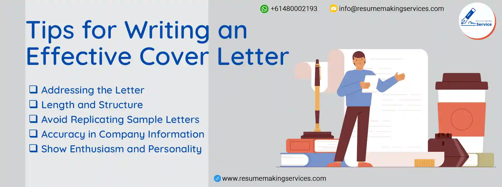

A cover letter is a crucial component of job applications across all fields. Whether you're pursuing a career in finance, healthcare, marketing, or any other industry, a well-crafted cover letter serves as your introduction to potential employers. It allows you to go beyond the bullet points on your resume and showcase your unique qualifications and motivations.
The Ideal Length in 2023
| Characteristics | Perfect Cover Letter Length |
|---|---|
| Page Count | 0.5 to 1 |
| Word count | 250 to 400 |
| Paragraph count | 3 to 6 |
How to Keep Your Cover Letter to One Page
Use a Clear and Concise Writing Style
Write clearly and straightforwardly, avoiding unnecessary jargon or lengthy sentences. Be concise and get straight to the point.
Prioritize Relevant Information
Focus on the most relevant skills, experiences, and qualifications that directly align with the job requirements. Tailor your content to the specific job you are applying for.
Keep the Introduction Brief
Start with a solid opening sentence to grab the reader's attention, but avoid lengthy introductions. State the position you are applying for and briefly mention your qualifications and interest.
Highlight Key Accomplishments
Instead of providing a detailed account of every task or responsibility, emphasize your most significant accomplishments and contributions, demonstrating your skills and suitability for the job.
Use Bulleted Lists
Consider using bullet points to present critical issues or achievements. Bulleted lists are easy to scan and can effectively and concisely highlight your qualifications.
Trim Unnecessary Details
Review your letter and remove any unnecessary information or repetitive statements. Ensure every sentence adds value and directly supports your candidacy.
Avoid Repetition with the Resume
Your cover letter should complement your resume, not duplicate it. Avoid reiterating all the details in your resume and focus on providing additional context or expanding on critical points.
Proofread and Edit
After writing your cover letter, proofread it carefully to eliminate grammatical errors, typos, or unnecessary filler words. Edit the content to ensure it flows smoothly and remains within the desired page limit.
Content That Should Be Included In Your Cover Letter
When writing a cover letter, it is essential to include the following elements:
Personal/Contact Information
Provide your details, such as your name, address, phone number, and email address.
Date
Mention the current date when writing the cover letter.
Salutation/Greeting
Begin with a professional salutation or greeting to address the recipient.
Source of Job/Company Information
Briefly mention how you learned about the job opening or the company, demonstrating your interest and engagement.
Attraction to the Job/Company
Explain what precisely attracts you to the job or company, such as recent projects they have undertaken or notable staff members you admire.
Value as a Team Asset
Clearly articulate why you believe you would be an asset to the team, highlighting relevant skills, experiences, or qualifications that make you a strong candidate.
Follow-up Plan
Indicate your intention to follow up on the application by mentioning a specific action you will take or expressing your openness to further discussion.
Closing and Signature
Conclude the letter with a professional finish and your signature, expressing your appreciation for the opportunity.
Example Of Cover Letter For Civil Engineering
John Locke
jjohno@email.com
Makhanda, 6214
(+61) 937 400 847
May 12, 2023
Dear Mr. Kinghorn,
I'm pleased to be applying for the Civil Engineer
position at Crackstump Engineering Services. I am
excited by the prospect of this position, as I've long
desired to work at your esteemed company. My experience
and qualifications closely align with the requirements
of the role.
Based on the job listing, you seek a civil engineer with structural design and project management expertise. As a Senior Civil Engineer at Buildscape Consultants, I have successfully managed and executed a wide range of infrastructure projects, including bridges, highways, and commercial buildings. I am well-versed in using industry-standard software such as AutoCAD and STAAD.Pro for precise structural analysis and design. Additionally, my projects have consistently adhered to strict timelines and budgets while ensuring compliance with relevant codes and regulations.
My professional achievements include leading a team in constructing a state-of-the-art suspension bridge that received recognition from the Civil Engineering Association for its innovative design. Furthermore, my ability to effectively collaborate with architects, contractors, and regulatory bodies has resulted in smooth project execution and timely completion.
In terms of education, I hold a Bachelor's degree in Civil Engineering from the University of Engineering, where I gained a strong foundation in structural analysis, geotechnical engineering, and project management. My skills, experience, and commitment to excellence make me an ideal candidate for the Civil Engineer position at Crackstump Engineering Services. I welcome the opportunity to discuss my qualifications further and learn more about your company's upcoming projects. Thank you for considering my application.
Sincerely,
John Locke
Tips for Writing an Effective Cover Letter
Addressing the Letter
- If you don't have a specific contact name, use "Dear Hiring Manager" or "Dear Human Resources Director."
- Avoid generic salutations like "To whom it may concern" or "Dear Sir/Madam."
Length and Structure
- Keep the letter concise, consisting of 3-4 paragraphs and limited to one page.
- Use this opportunity to elaborate on your resume rather than duplicate its content.
Avoid Replicating Sample Letters
- While using sample cover letters as a reference is helpful, refrain from copying exact words or phrases.
- Tailor the content to reflect your unique experiences and skills.
Accuracy in Company Information
- Double-check and ensure you have included the correct company name and contact details in the letter.
- This attention to detail demonstrates your professionalism and interest in the specific organization.
Show Enthusiasm and Personality
- Infuse your cover letter with enthusiasm and let your personality shine through.
- Highlight your passion for the role and convey your genuine interest in joining the company.
The Importance Of Cover Letter
- A cover letter introduces yourself to potential employers and sets the tone for your application.
- It allows you to tailor your application to specific job requirements and showcase your fit for the role.
- A cover letter allows one to highlight relevant skills, experiences, and achievements that align with the position.
- It lets you express your enthusiasm for the role and the company, showcasing your genuine interest and dedication.
- A well-crafted cover letter helps you stand out from other applicants and makes a memorable impression on hiring managers.
- It allows for addressing any career gaps, career changes, or other circumstances requiring explanation.
- A cover letter demonstrates professionalism, attention to detail, and communication ability.
How Can We Help You?
We go beyond engineering and cater to professionals from all fields. We understand that a well-crafted cover letter is a powerful tool for making a lasting impression on hiring managers across diverse industries. Our expertise extends beyond engineering to business, marketing, sales, nursing, and more, enabling us to deliver exceptional cover letter services tailored to your career aspirations.
With our professional resume service, you can trust that your cover letter will be carefully crafted to captivate hiring managers and highlight your unique qualifications. We emphasize the importance of showcasing your relevant skills, experiences, and accomplishments, ensuring that your cover letter stands out.